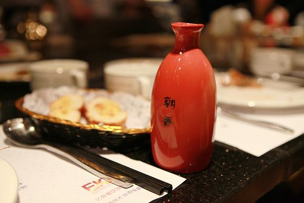

大口吃肉，尽情欢笑。 @ May 02, 2010
都说香港是个物欲都市，仿佛咽下鲍鱼，挽上LV，港人便满足了。 诚然，香港“犬儒的吃喝玩乐”盛行。但爱吃爱玩爱名牌，也包含了宣泄压力的原始冲动，虚荣，倒在其次。 为这个“为食忙”的城市，香港同事说，港人焦虑，直接影响到如厕品质，还称这是最多港人之疾。--周轶君
在蓝焰法式餐厅与JM们大口吃肉时刻。
所到之处，尽情欢笑。记得有一次去听民谣，观众身后的我们完全说笑到忘情，被人训斥两次，快乐，总会受到限制？

煎烤结束的黄鱼，在铁板上排列整齐，象上班族。

总是，迫不及待，看片。

两三轮各类肉等吃下来，再也吃不下了。
没有折扣的前提下，亏啊~

清酒，来助兴。

银雪鱼被煎成了大饼肌理，是不是？

香蕉切成段儿，煎好，上面铺上一球冰淇淋。

燃烧的冰淇淋。

她，好乖哦。
我们8个人在这个地方混战拍照，居然被围观。。。

18 Responses to “大口吃肉，尽情欢笑。”
2010-05-02
下次你不要开车时，咱们再大喝一次，哈哈~！
2010-05-02
好哦，昨天的清酒口味不错滴~早晨醒来，怀念昨天吃不下的肉啊~
2010-05-02
真是肉欲的一群女人哇。
2010-05-02
倒~~~~~~~~~~~~
肉欲~~~~~~~~~~~~
2010-05-02
这几次都好看，你把火照得太美了~~
8条小黄鱼都像我们的友谊欧~~挤在一起可爱史了…..
2010-05-02
法式餐厅？单位附近一家叫“鸿霖铁板”的自助，类似，我一直以为是吃日本餐的地方。最后的精彩也是这个火焰冰淇淋
2010-05-02
8条小黄鱼，就是表情有点那个……
2010-05-03
咦？呃？唉？哦？呜？哟？啊~~！
……最后一个已经叫不出声了。
这就是八小黄鱼的配音版。
2010-05-03
喜欢小黄鱼那个呆样:)
2010-05-03
笑死我了。真的是8条小黄鱼唉。每个表情都不一样。60号厨师铲刀所到之处，小黄鱼们无不崩溃。
2010-05-03
对小黄鱼的比喻太贴切了，收藏～
2010-05-03
对黄鱼的形容太有意思了。
2010-05-04
那个抽油烟机真好。我们这里的这种店都没有这种设备，吃一次浑身都是味道，就再也不去第二次了。那个小黄鱼看着都流口水。
2010-05-04
茶呢？不见你的影子？
2010-05-04
冰激凌很好吃！餐馆实在太热了，一热就吃不下，吃一点就饱了，回家一会就开始饿。。
2010-05-04
看着看着胃口大开，很丰盛的食物
2010-05-05
茶最后一张照片的装束好酷喔:)
2010-05-05
我那是为爬山准备的装束，呵呵~
Leave A Reply
存档只读，评论已关闭。